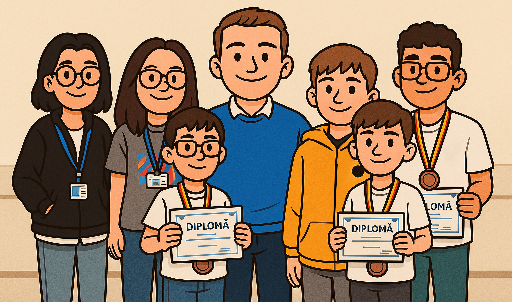

Despre mine
Sunt un profesor pasionat de programare, care a pornit de la visul de a crea jocuri pentru întreaga lume — și a ajuns să le creeze pentru elevii săi, care au devenit lumea lui. Îmbin dragostea pentru algoritmi cu dorința de a inspira. Sunt mereu deschis către provocări noi și oportunități de dezvoltare.
Elevii mei la Olimpiadă

Experiență
- Matemanie+ (Remote), 2022–Prezent – Pregătire pentru olimpiade de informatică, dezvoltare de jocuri educaționale.
- Logiscool România, 2022–2023 – Predare programare vizuală, JavaScript și Python pentru copii.
- Campanie politică, 2020 – Coordonator design materiale tipărite la nivel județean.
Educație
Universitatea din Craiova (2020–2024, licență susținută în 2025)
Licență în Informatică
Competențe tehnice
- C++, Python, JavaScript, Java, SQL, Bash
- OOP, sisteme embedded, Flutter, algoritmică
- Scrum & Agile, gândire logică, predare vizuală
Proiecte & Certificări
- 2024 – C++ Certified Entry-Level Programmer (CPE-20-01)
- Licență 2025: Robot educațional programabil pentru copii – cu Flutter, Arduino UNO R4 WiFi, Bluetooth și interfață Blockly.